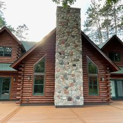

Solid brickwork is made of two or more wythes of bricks with the units running horizontally (called stretcher bricks) bound together with bricks running transverse to the wall (called "header" bricks). Each row of bricks is known as a course. The pattern of headers and stretchers employed gives rise to different 'bonds' such as the common bond (with every sixth course composed of headers), the English bond, and the Flemish bond (with alternating stretcher and header bricks present on every course). Bonds can differ in strength and in insulating ability. Vertically staggered bonds tend to be somewhat stronger and less prone to major cracking than a non-staggered bond.
The wide selection of brick styles and types generally available in industrialized nations allow much variety in the appearance of the final product. In buildings built during the 1950s-1970s, a high degree of uniformity of brick and accuracy in masonry was typical. In the period since then this style was thought to be too sterile, so attempts were made to emulate older, rougher work. Some brick surfaces are made to look particularly rustic by including burnt bricks, which have a darker color or an irregular shape. Others may use antique salvage bricks, or new bricks may be artificially aged by applying various surface treatments, such as tumbling. The attempts at rusticity of the late 20th century have been carried forward by masons specializing in a free, artistic style, where the courses are intentionally not straight, instead weaving to form more organic impressions.
A crinkle-crankle wall is a brick wall that follows a serpentine path, rather than a straight line. This type of wall is more resistant to toppling than a straight wall; so much so that it may be made of a single wythe of unreinforced brick and so despite its longer length may be more economical than a straight wall.
Blocks of cinder concrete (cinder blocks or breezeblocks), ordinary concrete (concrete blocks), or hollow tile are generically known as Concrete Masonry Units (CMUs). They usually are much larger than ordinary bricks and so are much faster to lay for a wall of a given size. Furthermore, cinder and concrete blocks typically have much lower water absorption rates than brick. They often are used as the structural core for veneered brick masonry or are used alone for the walls of factories, garages, and other industrial-style buildings where such appearance is acceptable or desirable. Such blocks often receive a stucco surface for decoration. Surface-bonding cement, which contains synthetic fibers for reinforcement, is sometimes used in this application and can impart extra strength to a block wall. Surface-bonding cement is often pre-colored and can be stained or painted thus resulting in a finished stucco-like surface. The primary structural advantage of concrete blocks in comparison to smaller clay-based bricks is that a CMU wall can be reinforced by filling the block voids with concrete with or without steel rebar. Generally, certain voids are designated for filling and reinforcement, particularly at corners, wall-ends, and openings while other voids are left empty. This increases wall strength and stability more economically than filling and reinforcing all voids. Typically, structures made of CMUs will have the top course of blocks in the walls filled with concrete and tied together with steel reinforcement to form a bond beam. Bond beams are often a requirement of modern building codes and controls. Another type of steel reinforcement referred to as ladder-reinforcement, can also be embedded in horizontal mortar joints of concrete block walls. The introduction of steel reinforcement generally results in a CMU wall having much greater lateral and tensile strength than unreinforced walls. "Architectural masonry is the evolvement of standard concrete masonry blocks into aesthetically pleasing concrete masonry units (CMUs)".[5][failed verification] CMUs can be manufactured to provide a variety of surface appearances. They can be colored during manufacturing or stained or painted after installation. They can be split as part of the manufacturing process, giving the blocks a rough face replicating the appearance of natural stone, such as brownstone. CMUs may also be scored, ribbed, sandblasted, polished, striated (raked or brushed), include decorative aggregates, be allowed to slump in a controlled fashion during curing, or include several of these techniques in their manufacture to provide a decorative appearance.[6] "Glazed concrete masonry units are manufactured by bonding a permanent colored facing (typically composed of polyester resins, silica sand and various other chemicals) to a concrete masonry unit, providing a smooth impervious surface."[7] Glass block or glass brick are blocks made from glass and provide a translucent to clear vision through the block.
Most older fireplaces have a relatively low efficiency rating. Standard, modern, wood-burning masonry fireplaces though have an efficiency rating of at least 80% (legal minimum requirement, for example, in Salzburg, Austria).[9] To improve efficiency, fireplaces can also be modified by inserting special heavy fireboxes designed to burn much cleaner and can reach efficiencies as high as 80% in heating the air. These modified fireplaces are often equipped with a large fire window, enabling an efficient heating process in two phases. During the first phase the initial heat is provided through a large glass window while the fire is burning. During this time the structure, built of refractory bricks, absorbs the heat. This heat is then evenly radiated for many hours during the second phase. Masonry fireplaces without a glass fire window only provide heat radiated from its surface. Depending on the outside temperature, 1 to 2 daily firings are sufficient to ensure a constant room temperature.
